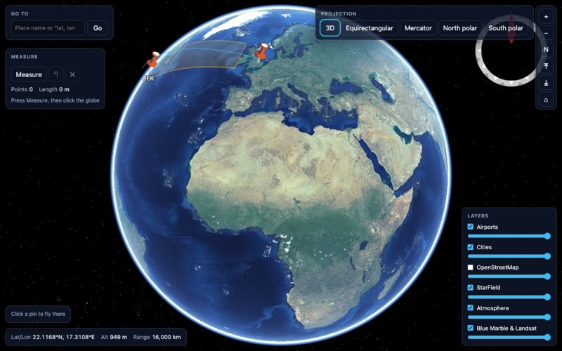
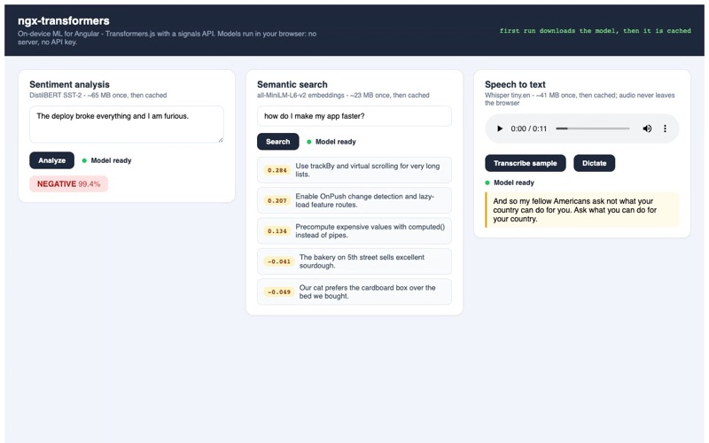
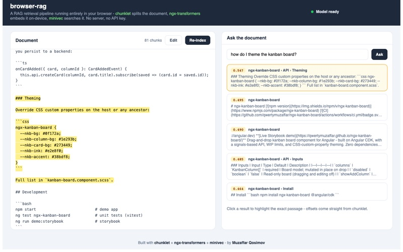
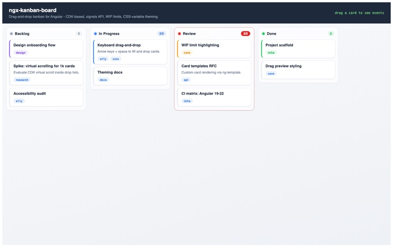
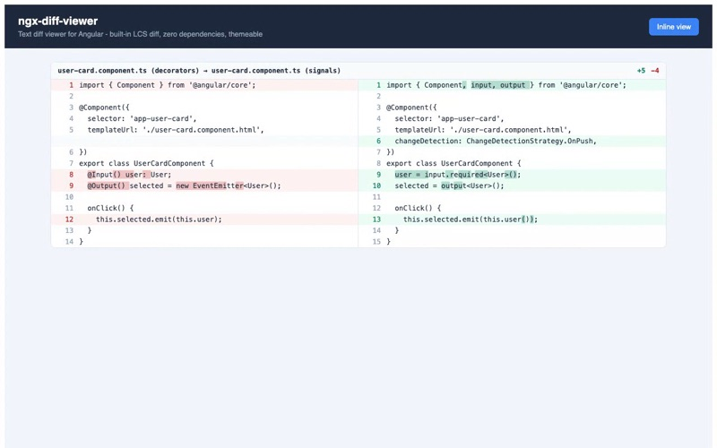

Angular Libraries & In-Browser Demos

worldwind-ui
UI toolkit for the NASA WebWorldWind 3D globe - a headless TypeScript core plus React and Angular adapters: layers, shapes, picking, popups and ready-made widgets. Three npm packages released with provenance, cross-browser Playwright suite, docs site with live demos.

ngx-transformers
On-device ML for Angular - Transformers.js models wrapped in a signals API: sentiment and zero-shot classification, embeddings and semantic search, translation, and Whisper speech-to-text running in the browser, on WebGPU when the device has it. No server, no API key.
chunklet
Token-aware, structure-aware text chunking for RAG - every chunk keeps exact source offsets so a citation highlights the real passage; sentence, markdown, code and HTML modes with heading breadcrumbs; pluggable tokenizer; zero dependencies.
minivec
Tiny embedded vector store - HNSW approximate search written from scratch, exact search, metadata filters and JSON persistence; about 3,600 queries per second at 0.99 recall on 20k vectors; runs in Node, the browser and edge runtimes; zero dependencies.
memoryline
Conversation memory for LLM apps - a token-budgeted window of recent turns, a running summary that compacts older ones, pinned and extracted facts, semantic recall, native tool calls, and renderers for the OpenAI and Anthropic message shapes. Bring your own model, embeddings and store; zero dependencies.
llm-budget
Per-user token and dollar budgets, rate limits and a circuit breaker for LLM API calls - usage metering from OpenAI and Anthropic responses, reservations for streaming, memory, SQL and Redis stores for multi-instance apps, Express middleware. Zero dependencies.
sourcecheck
Citation checker for LLM output - locates every quoted passage exactly, after normalization or fuzzily, with offsets; grades claims supported, partial or unsupported; verifies extracted fields against their evidence; optional model judge; Markdown reports. Zero dependencies.
deidentify
PHI de-identification for clinical text - detect, redact and pseudonymize the 18 HIPAA Safe Harbor identifiers with exact offsets, section-aware rules for SOAP notes, expert-determination summaries, and optional on-device NER that runs on WebGPU in the browser. Zero-dependency core.
leakcheck
Leakage, drift and data contract checks for ML datasets - target leakage and future-dated features, train/test overlap, PSI, KS and chi-square drift against a saved baseline, schema and freshness contracts, and a CLI that gates a pipeline. Zero dependencies.

browser-rag
RAG retrieval running entirely in the browser - chunklet splits the document, ngx-transformers embeds it on-device, minivec indexes the vectors in an HNSW graph, and every hit highlights the exact passage in the source. Nothing leaves the device.

ngx-kanban-board
Drag-and-drop kanban board - pointer and keyboard dragging, WIP limits, inline column and card creation, signals API, themeable via CSS custom properties.

ngx-diff-viewer
Text diff viewer with side-by-side and inline modes - built-in LCS engine with intra-line change highlighting, zero dependencies.
AI & LLM Libraries
memoryline
Conversation memory for LLM apps - a token-budgeted window of recent turns, a running summary that compacts older ones, pinned and extracted facts, and semantic recall of what was folded away. Tool calls are modelled natively, so compaction never separates a call from its result. Renders straight to OpenAI or Anthropic messages.
sourcecheck
Checks that every claim an LLM makes points at a real passage in its sources - exact, normalized and fuzzy quote location with offsets, claims graded supported / partial / unsupported with coverage, field-level checks for extraction, a model-judge hook, citation prompts and parsers, Markdown reports.
llm-budget
Per-user token and dollar budgets, rate limits and a circuit breaker for LLM API calls - usage metered from OpenAI and Anthropic responses and streams, reservations so concurrent calls cannot overshoot a limit, Redis and shared-store adapters for multi-instance apps, Express middleware.
chunklet
Token-aware, structure-aware text chunking for RAG - sentence, markdown, code and HTML modes with heading breadcrumbs, a pluggable tokenizer, and exact source offsets so every retrieved chunk can be highlighted in the original document.
minivec
Tiny embedded vector store - HNSW approximate search written from scratch, exact search, metadata filters, JSON persistence. Runs in Node, the browser and edge runtimes; 40-67x faster than exact search at 99-100% recall.
deidentify
PHI de-identification for clinical text - detects, redacts and pseudonymizes the HIPAA Safe Harbor identifiers with exact offsets, section-aware for SOAP-style notes, an expert-determination risk summary, and optional on-device NER. Zero dependencies.
leakcheck
Leakage, drift and data-contract checks for ML datasets - target leakage, train/test overlap and future-dated features; PSI, KS and chi-square drift against saved baselines; schema, range and freshness contracts; a CLI for CSV, NDJSON and JSON with Markdown reports. Zero dependencies.
Backend APIs & MCP Servers
timeline-api
REST API for hierarchical project timelines - recursive SQL, duration-weighted progress rollup, Swagger docs, 13 integration tests, CI.
shifo-java
Clinic-management REST API - 12 feature modules, Spring Security with JWT, role-based access control, OpenAPI documentation.
mcp-software-design
MCP server that teaches AI coding agents software design - SOLID/OOP principles, all 23 GoF patterns, heuristic code-smell detection.